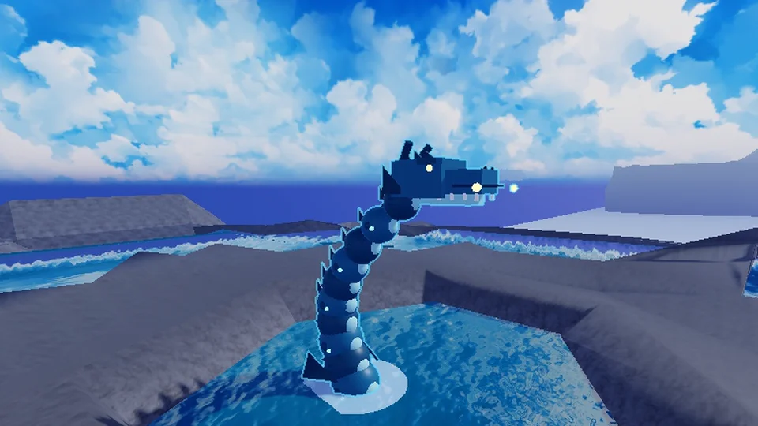
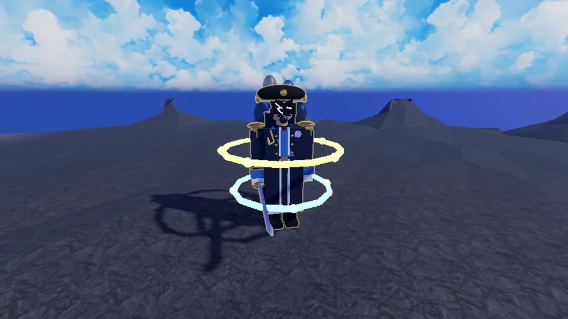

In ontwikkeling
ZORYT
Anime Training Simulator
Je dorp is in één nacht afgebrand. Train met Sensei Hanzo, word sterker na elke sessie, versla bazen in combogevechten en bevrijd wereld na wereld uit de duisternis.
Een Roblox-spel voor pc en telefoon, in veel talen
Gratis te spelen, met optionele aankopen voor Robux
Nog in ontwikkeling: dingen kunnen veranderen

Een eerste blik
Vroege beelden uit het spel in ontwikkeling: je mentor en twee bazen van de zeewerelden.


Zo speel je het
Training als minigames
Elk trainingsveld speelt anders: bubbels laten knappen, op taikotrommels slaan, patronen uit je geheugen herhalen, vuurvliegjes volgen, naar parels duiken. Elke ronde maakt je sterker, en auto-training houdt je bezig.
Bazen met combo's
Ontwijk de aanvallen, sla terug en maak op het juiste moment de combo af met tikken, vegen en ritme precies op tijd. Een minibaas bewaakt de poort van elke wereld.
Werelden om te bevrijden
Van een verbrand sakuradorp via vulkanen, hemeltoppen en een mistig bos naar havens, riffen en een door de storm geteisterde vuurtoren. Elke wereld heeft zijn eigen verhaal, opdrachten en geheimen, en in sommige opdrachten bevrijd je mensen die gevangen worden gehouden.
Wedergeboorte en het PAD
Koop zwaarden en aura’s met munten. Als je Kracht hoog genoeg is, word je herboren: zwaarden en aura’s beginnen opnieuw, maar je verdient tokens voor de PATH-vaardighedenboom en opent de volgende wereld.
Huisdieren uit eieren
Elke wereld heeft een eigen ei: broed otters, meeuwen, krabben, kleine draken, walvissen en meer uit, en neem je beste team mee.
Zwaarden, aura's, drankjes
Koop zwaarden en aura’s die om je heen gloeien, en drink Kracht-, Geluks- of Helingdranken als het erop aankomt.
Met vrienden of alleen
Beklim de Eindeloze Toren solo, of als team van 2 tot 4 spelers, sluit je aan bij een huis van de Orde van Sakura en meet je met andere spelers in PvP-arena’s.
Events en invasies
Regelmatige events brengen Dubbele Training, Geluksbroed, Dubbele Munten of Schaduwnacht. Schaduwbazen vallen de werelden binnen, en elke wereld heeft eigen events, van lantaarnfeesten tot onweersbuien.
Tussen de gevechten
Vissen en duiken
Vis vanaf de steigers, duik naar gezonken kisten en houd het spookschip in de gaten dat door de mist drijft.
Bandexamens
Verdien je banden van wit tot zwart door de examens van Sensei Hanzo te halen.
De Codex
Monsters, werelden, huisdieren, uitrusting en verborgen geheimen: alles wat je vindt komt in de Codex, met beloningen voor volledige verzamelingen.
Titels en emotes
Verdien titels voor je prestaties, zoals Zwarte Band, en begroet andere spelers met emotes.
Huisdieren ruilen en samenvoegen
Geef huisdieren aan andere spelers in een ruil, of voeg overtollige samen tot iets sterkers.
Keuzes in het verhaal
In sommige opdrachten vraagt een personage je iets, en je antwoord wordt onthouden.
Veel talen · Pc en telefoon · Auto-training · Online Pass met een gratis en een gouden spoor
Vragen
Is ZORYT gratis?
Ja, je kunt het gratis spelen. Er zijn optionele aankopen voor Robux: vier passen (het gouden spoor van de Online Pass, Auto x3, VIP en Snel uitkomen) en producten zoals muntenkisten, Krachtrollen, drankjes en een Startpakket. Sommige verkopen voortgang, zoals munten, Kracht of sneller trainen.
Is het spel af?
Nee. Het staat op Roblox maar is nog in ontwikkeling, dus werelden, balans en teksten veranderen. Op 1 november 2026 is de voortgang van iedereen teruggezet naar het begin.
Waar kan ik het spelen?
ZORYT draait in Roblox, op pc en telefoons. Deze pagina heeft er nog geen link naartoe, omdat het spel niet af is.
Heb ik vrienden nodig om te spelen?
Nee. Je kunt alles alleen spelen. De teamtoren heeft 2 tot 4 spelers nodig, en PvP-arena’s en huizen zijn om met anderen te spelen.
Wat wist een wedergeboorte?
Je Kracht, munten, zwaarden en aura’s beginnen opnieuw. Je behoudt je huisdieren, titels, geopende werelden, PATH-items en Robux-passen, en je verdient tokens voor het PATH.
Wat slaat het spel over mij op?
Je voortgang, je instellingen en de meldingen die je verstuurt, in datastores op Roblox, plus speelgebeurtenissen in de analyse van Roblox. Geen e-mail, echte naam of betaalgegevens bereiken de ontwikkelaar. Lees het privacybeleid.
Nog in ontwikkeling
ZORYT is openbaar op Roblox, maar niet af: werelden, bazen, prijzen en het verhaal worden nog gebouwd en in balans gebracht, dus dingen kunnen veranderen of worden gereset. Je kunt een bug of een idee melden via de instellingen van het spel. Het spel is gratis; sommige optionele Robux-passen en -producten verkopen voortgang, zoals munten, Kracht of sneller trainen.
Lees het privacybeleidVragen en ideeën: support@pegasohlib.com